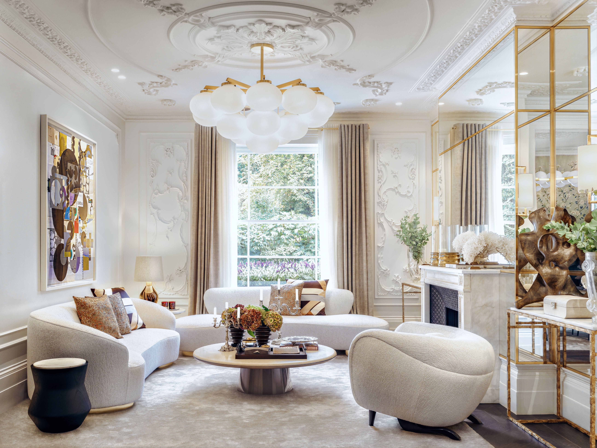
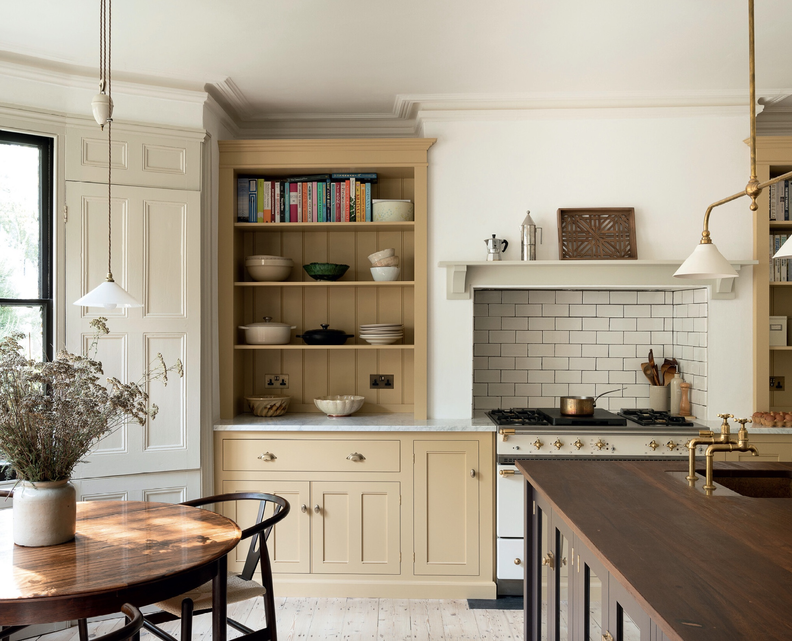
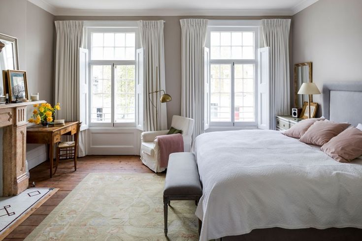

£550,000
Falkner Street, Liverpool
4 Bedrooms
2 Bathrooms
Sprawley Multi-Storey Living



Experience timeless luxury in this exceptional Georgian townhouse, situated in the heart of Liverpool’s historic Quarter. Featuring grand sash windows, beautifully restored period interiors, and breathtaking city views, this prestigious property offers an exceptional standard of modern living within a classic heritage setting.